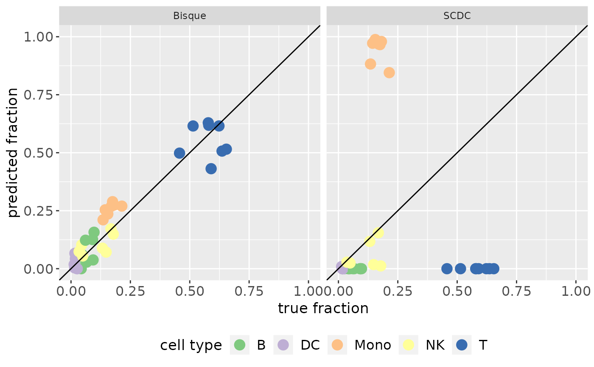

Make a Scatterplot for Benchmarking
make_benchmarking_scatterplot(result_list, ref_data, file_name = NULL)the ggplot object
data("single_cell_data_1")
data("cell_type_annotations_1")
data("batch_ids_1")
data("bulk")
data("RefData")
common_genes <- intersect(rownames(single_cell_data_1), rownames(bulk))[1:2000]
single_cell_data <- single_cell_data_1[common_genes, 1:500]
cell_type_annotations <- cell_type_annotations_1[1:500]
batch_ids <- batch_ids_1[1:500]
bulk <- bulk[common_genes, ]
RefData <- RefData[, order(colnames(RefData))]
res_bisque <- deconvolute(
bulk, NULL, "bisque", single_cell_data,
cell_type_annotations, batch_ids
)
res_scdc <- deconvolute(bulk, NULL, "scdc", batch_ids,
single_cell_object = single_cell_data,
cell_type_annotations = cell_type_annotations
)
#> You requested to run scdc which is currently not installed. Do you want to install the packages required for it: omnideconv/SCDC (Yes/no/cancel)
#> To install the dependencies for all methods at once, run devtools::install_github("omnideconv/omnideconv", dependencies = c("Imports", "Suggests"))
#> Using github PAT from envvar GITHUB_PAT. Use `gitcreds::gitcreds_set()` and unset GITHUB_PAT in .Renviron (or elsewhere) if you want to use the more secure git credential store instead.
#> Downloading GitHub repo omnideconv/SCDC@HEAD
#> xbioc (NA -> 1354168bd...) [GitHub]
#> fastmatrix (NA -> 0.5-7721 ) [CRAN]
#> pheatmap (NA -> 1.0.12 ) [CRAN]
#> reshape (NA -> 0.8.9 ) [CRAN]
#> nnls (NA -> 1.6 ) [CRAN]
#> L1pack (NA -> 0.50 ) [CRAN]
#> Downloading GitHub repo renozao/xbioc@HEAD
#> pkgmaker (NA -> e9dbb8252...) [GitHub]
#> Biostrings (NA -> 2.74.1 ) [CRAN]
#> plogr (NA -> 0.2.0 ) [CRAN]
#> DBI (NA -> 1.2.3 ) [CRAN]
#> blob (NA -> 1.2.4 ) [CRAN]
#> KEGGREST (NA -> 1.46.0 ) [CRAN]
#> RSQLite (NA -> 2.3.9 ) [CRAN]
#> checkmate (NA -> 2.3.2 ) [CRAN]
#> BiocManager (NA -> 1.30.25 ) [CRAN]
#> Annotatio... (NA -> 1.68.0 ) [CRAN]
#> Downloading GitHub repo renozao/pkgmaker@develop
#> registry (NA -> 0.5-1) [CRAN]
#> Installing 1 packages: registry
#> Installing package into ‘/home/runner/work/_temp/Library’
#> (as ‘lib’ is unspecified)
#> ── R CMD build ─────────────────────────────────────────────────────────────────
#> * checking for file ‘/tmp/RtmpWkk9D3/remotes34581c965ad0/renozao-pkgmaker-e9dbb82/DESCRIPTION’ ... OK
#> * preparing ‘pkgmaker’:
#> * checking DESCRIPTION meta-information ... OK
#> * checking for LF line-endings in source and make files and shell scripts
#> * checking for empty or unneeded directories
#> Removed empty directory ‘pkgmaker/vignettes’
#> * building ‘pkgmaker_0.32.8.tar.gz’
#>
#> Installing package into ‘/home/runner/work/_temp/Library’
#> (as ‘lib’ is unspecified)
#> Installing 9 packages: Biostrings, plogr, DBI, blob, KEGGREST, RSQLite, checkmate, BiocManager, AnnotationDbi
#> Installing packages into ‘/home/runner/work/_temp/Library’
#> (as ‘lib’ is unspecified)
#> Skipping install of 'pkgmaker' from a github remote, the SHA1 (e9dbb825) has not changed since last install.
#> Use `force = TRUE` to force installation
#> ── R CMD build ─────────────────────────────────────────────────────────────────
#> * checking for file ‘/tmp/RtmpWkk9D3/remotes345858c8fe64/renozao-xbioc-1354168/DESCRIPTION’ ... OK
#> * preparing ‘xbioc’:
#> * checking DESCRIPTION meta-information ... OK
#> * checking for LF line-endings in source and make files and shell scripts
#> * checking for empty or unneeded directories
#> * looking to see if a ‘data/datalist’ file should be added
#> * building ‘xbioc_0.1.19.tar.gz’
#>
#> Installing package into ‘/home/runner/work/_temp/Library’
#> (as ‘lib’ is unspecified)
#> Installing 5 packages: fastmatrix, pheatmap, reshape, nnls, L1pack
#> Installing packages into ‘/home/runner/work/_temp/Library’
#> (as ‘lib’ is unspecified)
#> Skipping install of 'xbioc' from a github remote, the SHA1 (1354168b) has not changed since last install.
#> Use `force = TRUE` to force installation
#> ── R CMD build ─────────────────────────────────────────────────────────────────
#> * checking for file ‘/tmp/RtmpWkk9D3/remotes34585305aa86/omnideconv-SCDC-f68175a/DESCRIPTION’ ... OK
#> * preparing ‘SCDC’:
#> * checking DESCRIPTION meta-information ... OK
#> * checking for LF line-endings in source and make files and shell scripts
#> * checking for empty or unneeded directories
#> Omitted ‘LazyData’ from DESCRIPTION
#> * building ‘SCDC_0.0.0.9000.tar.gz’
#>
#> Installing package into ‘/home/runner/work/_temp/Library’
#> (as ‘lib’ is unspecified)
#> Creating Basis Matrix adjusted for maximal variance weight
#> Used 1630 common genes...
#> Used 6 cell types in deconvolution...
#> HD3021b2ee377f8711ec9bf265fb9bf6ab9cPBMC21b2ee377f8711ec9bf265fb9bf6ab9c0 has common genes 1559 ...
#> WNNLS Converged at iteration 72
#> HD3021b2ee377f8711ec9bf265fb9bf6ab9cPBMC21b2ee377f8711ec9bf265fb9bf6ab9c1 has common genes 1556 ...
#> WNNLS Converged at iteration 3
#> HD3021b2ee377f8711ec9bf265fb9bf6ab9cPBMC21b2ee377f8711ec9bf265fb9bf6ab9c3 has common genes 1565 ...
#> WNNLS Converged at iteration 10
#> HD3021b2ee377f8711ec9bf265fb9bf6ab9cPBMC21b2ee377f8711ec9bf265fb9bf6ab9c7 has common genes 1559 ...
#> WNNLS Converged at iteration 14
#> HD3121b2ee377f8711ec9bf265fb9bf6ab9cPBMC21b2ee377f8711ec9bf265fb9bf6ab9c0 has common genes 1571 ...
#> WNNLS Converged at iteration 4
#> HD3121b2ee377f8711ec9bf265fb9bf6ab9cPBMC21b2ee377f8711ec9bf265fb9bf6ab9c1 has common genes 1556 ...
#> WNNLS Converged at iteration 1
#> HD3121b2ee377f8711ec9bf265fb9bf6ab9cPBMC21b2ee377f8711ec9bf265fb9bf6ab9c3 has common genes 1546 ...
#> WNNLS Converged at iteration 1
#> HD3121b2ee377f8711ec9bf265fb9bf6ab9cPBMC21b2ee377f8711ec9bf265fb9bf6ab9c7 has common genes 1558 ...
#> WNNLS Converged at iteration 3
result_list <- list(SCDC = res_scdc, Bisque = res_bisque)
# Merging the two T cell props
result_list <- lapply(result_list, function(x) {
cbind(x, T = (x[, "CD4 T"] + x[, "CD8 T"]))[, -c(2, 3)]
})
make_benchmarking_scatterplot(result_list, RefData)

# Alternative if you want to save the plot in a file
# make_benchmarking_scatterplot(result_list, RefData, "predictionVsGroundtruth.png")